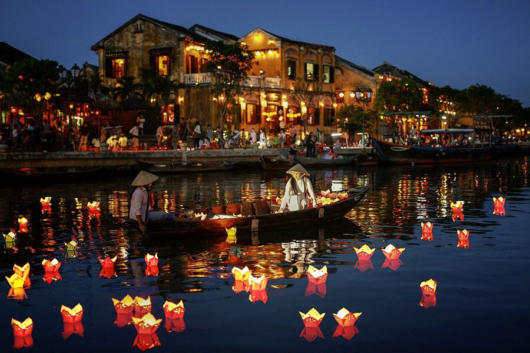

| Homepage | Vietnam Sceneries | Vietnam Expenses |
There are lots of locations to enjoy the nightlife at night. Vietnam has a street that
is intended for individuals looking to have fun at night. Dozens of bars, including
pubs, rooftop bars, and more, and it's possible to spend less than $10 for the
entire evening. It may also be worthwhile to simply stroll along the street and take in
the bustle of Vietnam.
| Short Videos | Festival Name | Festival Description |
|---|---|---|
| Full Moon Lantern Festival | It is a monthly event that celebrates the full moon. | |
| Lunar New Year Festival (Tết) | Vietnamese people use this time to pay tribute to their ancestors and celebrate the start of the lunar New Year with their families. | |
| Mid-Autumn Festival | Vietnamese people would thank the moon for a successful harvest season. In addition, the festival creates an opportunity for busy field workers to show love to their children. |
Lanterns are used in many Vietnamese festivals. The Vietnamese would light up lanterns and have them float up in the sky. Some people believe in the theory
that if they light up a lantern in the sky with their respected partner, then they would boost their chances of having everlasting love.

In Vietnam, citizens are taught that the importance of family is greater than the worth of self.
Hence, it is common to see the generation of great-grandma to the current generation living in one house.
This is called 'filial piety', which means showing respect and care for parents and ancestors.
This belief does not only stay amongst family, but encouraged for all community.
This means, the people in Vietnam will always demonstrate selflessness for those in need.
To suffer together- to grow together. The belief of this helps tourists to feel a homely
environment.
In Vietnam, you get to see the showcase of traditional Vietnamese dances in theatres.
Here are some representations of Vietnamese dances:
Video 1
Video 2
You can almost guarantee that the drinks you get on the streets will be goodly because of the freshness.
Vietnamese people place favor for healthiness. So, you will see mainly juice in every corner of a neighborhood.
The drinks include...
They may be found across the globe, but they can never beat the level of
accessibility of Vietnamese drinks in Vietnam.
Vietnamese food is more often than not healthful, and the cuisine is becoming increasingly
popular around the world. When you visit Vietnam, you will be able to sample the uniqueness
of Vietnamese cuisine that cannot be fully replicated in any other country.
Common Vietnamese dishes are Pho, Spring Rolls, and Traditional Vietnamese Sandwiches.
Furthermore, walking on the market streets of Vietnam, you get the opportunity
to try numerous street food delicacy in a short distance between each.
People would bring their portable stove and more to make fresh meals.
This is due to the uncountable number of households who would grow a garden
in their backyard and make a living to sell the home produce.
This is a video showing how some street foods are prepared.